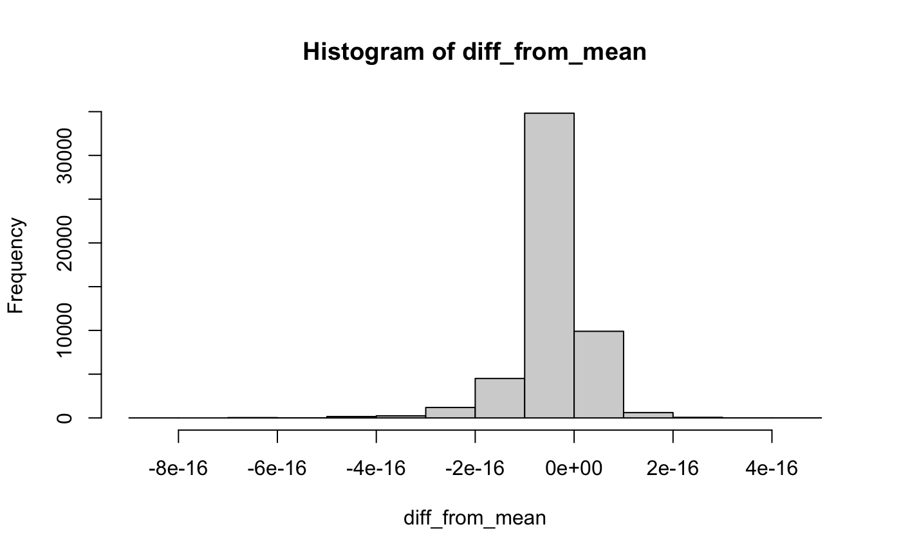
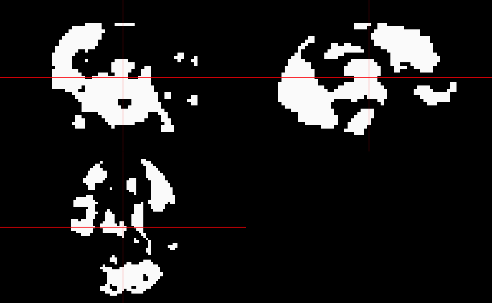

Data
The data is from https://www.fil.ion.ucl.ac.uk/spm/data/face_rfx/. The data was from the study of
Henson, R. N. A., et al. “Face repetition effects in implicit and explicit memory tests as measured by fMRI.” Cerebral Cortex 12.2 (2002): 178-186.
We have included a subset of this data in the inst/extdata/ directory (from the can contrast):
tarfile = system.file("extdata", "can.tar.gz", package = "limmi") # tarfile exdir = tempfile() dir.create(exdir) files = untar(tarfile = tarfile, list = TRUE, exdir = exdir) files = files[!grepl("^\\.", basename(files))] unz = untar(tarfile = tarfile, files = files, exdir = exdir) files = files[ grepl("hdr", basename(files))] # files files = file.path(exdir, files)
Create a Data Matrix
We will use the nifti_images_to_matrix function to read these images into a matrix:
mat = nifti_images_to_matrix(files, verbose = FALSE) attr(mat, "image_dim") #> [1] 53 63 46 attr(mat, "image_pixdim") #> [1] 3 3 3 dim(mat) #> [1] 153594 12
Let’s read in one of the images and look at the contrast images:
img = asNifti(files[[1]])
have_neurobase = requireNamespace("neurobase", quietly = TRUE)

We can also look at the mean image over all voxels:
mask = array(TRUE, dim = dim(img)) mean_image = limmi:::remake_nifti_image(rowMeans(mat), img, mask = mask >0) if (have_neurobase) { neurobase::ortho2(mean_image, pdim = pdim) }

Now, we could run limma directly on this matrix. The nifti_limma function does this as a wrapper for the process. We should likely have a mask file of the voxels we want to perform the operation, but otherwise it will work over all voxels, even those with NaN in all the regions.
Let’s make a mask of voxels where there is any non-missing in the data:
keep = rowSums(!is.na(mat)) > 0 mask = array(keep, dim = dim(img)) mask = asNifti(mask, reference = img) if (have_neurobase) { neurobase::ortho2(mask, pdim = pdim) }

Run limma
Now that we have the mask we want, let’s run limma and a linear fit:
fit = limma::lmFit(mat[keep, ])
All in one line
We can use the nifti_lmFit function to perform this all in one function:
check_fit = nifti_lmFit(imgs = files, mask = mask, verbose = FALSE) all.equal(check_fit$coefficients, fit$coefficients) #> [1] TRUE
Running eBayes
Let’s run eBayes with the defaults (not likely a good idea with this data), getting the results:
eb = limma::eBayes(fit = fit) coef_vec = eb$coefficients[,1] coef_image = limmi:::remake_nifti_image(coef_vec, img, mask = mask > 0) if (have_neurobase) { neurobase::double_ortho(mean_image, coef_image, pdim = pdim) }

All in one line
The nifti_eBayes function will do the reading, fitting, and eBayes:
check_eb = nifti_eBayes(files, mask, verbose = FALSE) all.equal(check_eb$empirical_bayes$coefficients, eb$coefficients) #> [1] TRUE
diff_from_mean = mean_image - coef_image if (have_neurobase) { neurobase::ortho2(diff_from_mean, pdim = pdim) }

hist(diff_from_mean)

The output of nifti_eBayes does the remaking of images, and the images element is a list of these output images from eBayes:
if (have_neurobase) { neurobase::ortho2(check_eb$images$p.value, pdim = pdim) }

By default, nifti_eBayes also does a topTable from limma to adjust the p-values, using a Benjamini-Hochberg adjustment:
if (have_neurobase) { neurobase::ortho2(check_eb$images$adjusted_p_value, pdim = pdim) neurobase::ortho2(check_eb$images$adjusted_p_value <= 0.05, pdim = pdim) }


Here we can compare the two maps, before and after adjustment:
if (have_neurobase) { neurobase::ortho2(check_eb$images$p.value <= 0.05, pdim = pdim) neurobase::ortho2(check_eb$images$adjusted_p_value <= 0.05, pdim = pdim) }


Running the locally moderated T statistics
Here we run findNearestNeighbors to list the neighbors of each voxel. The function nifti_local_moderated_t_stat produces moderated T statistics with respect to the local neighbors. The computation can be parallelized by specifying the parameter mc.cores.
# Specifying the radius of neighborhood
r = 2
findnn = findNearestNeighbors(maskImg = mask, radius = r, threads = 8)
localt = nifti_local_moderated_t_stat(imgs = files, mask = mask, nn = findnn, radius = r,
adjust.method = "BH", mc.cores = 1)
#>
|
| | 0%
|
|====== | 8%
|
|============ | 17%
|
|================== | 25%
|
|======================= | 33%
|
|============================= | 42%
|
|=================================== | 50%
|
|========================================= | 58%
|
|=============================================== | 67%
|
|==================================================== | 75%
|
|========================================================== | 83%
|
|================================================================ | 92%
|
|======================================================================| 100%Here we compares the locally moderated T-statistic(left) with the globally moderated T-statistic (right).
if (have_neurobase) { neurobase::ortho2(localt$pvalmap <= 0.05, pdim = pdim) neurobase::ortho2(check_eb$images$p.value <= 0.05, pdim = pdim) }
